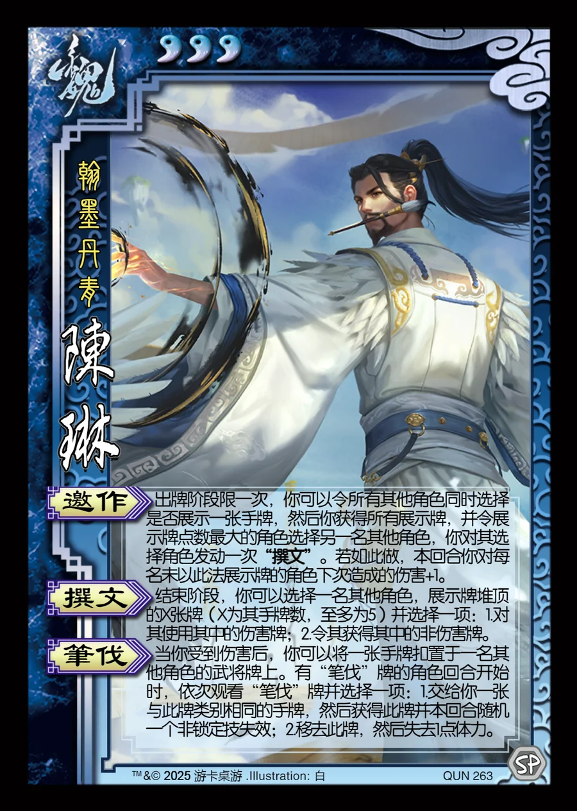

点击卡面查看大图
魏
陈琳
♥3翰墨丹青
邀作
出牌阶段限一次，你可以令所有其他角色同时选择是否展示一张手牌，然后你获得所有展示牌，并令展示牌点数最大的角色选择另一名其他角色，你对其选择角色发动一次“撰文”。若如此做，本回合你对每名未以此法展示牌的角色下次造成的伤害+1。
撰文
结束阶段，你可以选择一名其他角色，展示牌堆顶的X张牌（X为其手牌数，至多为5）并选择一项：1.对其使用其中的伤害牌；2.令其获得其中的非伤害牌。
笔伐
当你受到伤害后，你可以将一张手牌扣置于一名其他角色的武将牌上。有“笔伐”牌的角色回合开始时，依次观看“笔伐”牌并选择一项：1.交给你一张与此牌类别相同的手牌，然后获得此牌并本回合随机一个非锁定技失效；2.移去此牌，然后失去1点体力。